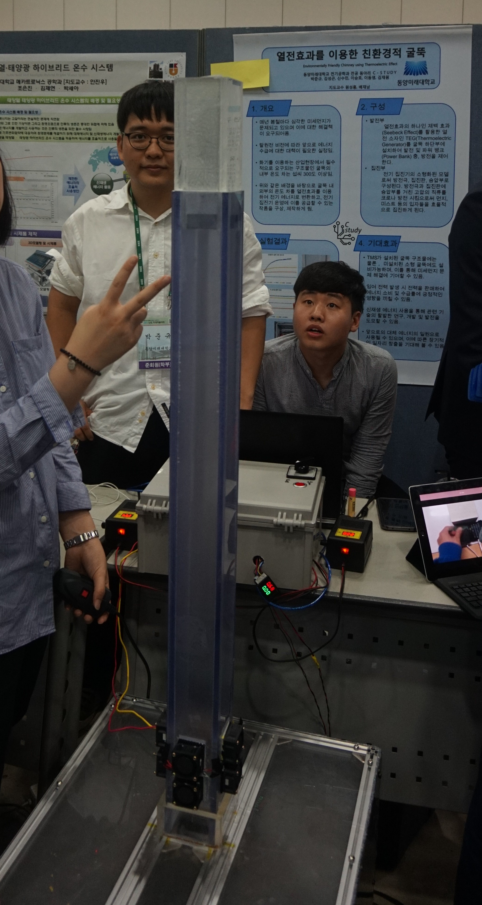
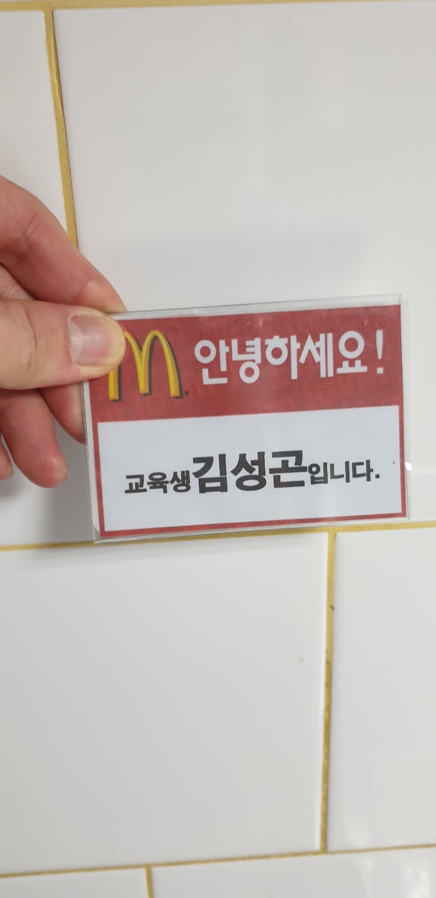

"졸업학년"
"동아리방 지박령"
"공부 빼고 다 잘하는..."
모든 과제를 마감 전날에 시작하는... 상당한 귀차니즘의 소유자이다.
그러나 제출하는 과제에 본인이 만족해야 제출하는... 이상한(?) 완벽주의적인 성격 또한 가지고 있다.
사람인지라 적당한 실수를 저지르기도 하는데, 이를 계속 보면 좀 모자라 보이기도 한다.
|
김성곤 (金成坤)
Kim SeongGon |
|
|
|
|
| 출생 | 1997년 3월 1일 |
| 출생지 | 서울 영등포구 |
| 소속 | 동양미래대학교 전기전자통신공학부 전기공학과 |
| 학력 | 우신초등학교 (졸업)
영원중학교 (졸업) 영신고등학교 (졸업) 동양미래대학교 (재학중) |
| 링크 | 카카오톡 |
"졸업학년"
"동아리방 지박령"
"공부 빼고 다 잘하는..."
모든 과제를 마감 전날에 시작하는... 상당한 귀차니즘의 소유자이다.
그러나 제출하는 과제에 본인이 만족해야 제출하는... 이상한(?) 완벽주의적인 성격 또한 가지고 있다.
사람인지라 적당한 실수를 저지르기도 하는데, 이를 계속 보면 좀 모자라 보이기도 한다.
무언가 뜯어보고 만들어 보는걸 좋아했다.
그 중에서 특히 초록색 기판들에 관심이 많았으며, 그러한 관심이 전기공학으로 이끌게 되었다.
전설이라 불리는 이과 수시 6 논술을 지원했었으나, 모두 떨어져서 동미대 전기과에 16학번으로 입학하였다.
| 월 | 화 | 수 | 목 | 금 | |
| 9 | 전기기기실험 | ||||
| 10 | 웹프로그래밍기초 | 모터제작기초실습 | |||
| 11 | |||||
| 12 | |||||
| 13 | 전기설비이론 | 마이크로컴퓨터실험 | 3D프린터활용기술창업 | ||
| 14 | 회로제작프로젝트 | ||||
| 15 | |||||
| 16 | 벤처창업 | ||||
| 17 | 전기자기학 | ||||
| 18 |
보다시피 "수" 공강이다!!
또한 타학과 수강을 통해 '웹프로그래밍기초' 강좌를 수강중이다.
1학기 23학점... 수강을 통해 마지막 졸업 학기엔 16학점만 수강하면 된다!!
현재 가장 가까이에 있는 꿈으로는 "스타트업 창업"이 있다.
이를 위해 현재 캠퍼스 CEO 강좌인 "3D 프린터 활용 기술창업" 강좌를 수강중이며, 관련 특강과 프로그램도 수강 중에 있다.
'17 대한전기학회 스마트 에너지 경진대회

그 밖에 '17 및 '20 ICT 융합 프로젝트에 참여하였다.
이 외에도 여러 개인 프로젝트를 진행하였지만, 자료가 남아있지 않다.
현재 전기공학과 전공동아리 C-STUDY 부원으로 활동중이며, 대한전기학회 하계 학술대회 스마트에너지 경진대회 참가를 준비중이다.
중학생 시절의 축제를 시작으로 계속해서 밴드 활동에 몸담아 왔다.
아래는 가장 근래의 공연(?) 영상으로 군복무 중 부대 성당에서 촬영된 것이다.
- YB 흰수염고래 (기타 세션)
- 미사 중 반주 영상 (드럼 세션)
현재는 전공동아리와 더불어 취미동아리 중 밴드 동아리인 MRA에서도 활동중이다.
야구를 좋아하며 두산 베어스의 골수팬이다. 아래 사진은 직관 중에 직접 촬영한 것이다.
현재 코로나 19로 인해 무관중 경기만 진행되고 있어 하루 빨리 관중과 함께하는 경기가 진행되길 고대하고 있다.

최근들어 맥도날드 안국역점에서 크루로 아르바이트를 시작하였다.
같은 학교 밴드동아리 친구의 소개로 시작하게 되었으며, 집과의 거리가... 상당하여 앞으로의 계획을 고민 중에 있다.
아직은 식사로 제공되는 햄버거가 좋지만, 다들 조금만 더 일해보면 햄버거 먹기도 싫을거라해서 걱정 중이다.

-맺음말-
위키 백과의 형식과 문체를 참고하여 조금은 자유로운 느낌의 자기소개서를 작성해 보았습니다.
읽는데 불편하지 않으셨기를 바라며 이만 마쳐보겠습니다.
감사합니다.